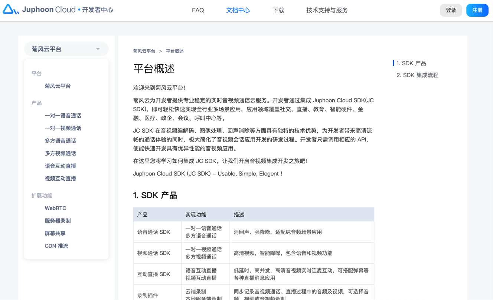

菊风
国内的RCS服务商，做的比较专业的有：菊风。
- 菊风
如何用菊风开发RCS？
- 问：想要用菊风去开发RCS，如何操作？
- 答：需要单独联系合作 暂无SDK下载
- QQ：
2703650800 - 咨询电话：
13056832331
- QQ：
- 研究过程：
目前已有的官网下载
其实只是VoIP的SDK，文档也是VoIP，SIP相关的文档：
- 下载 Juphoon VoIP 控件化SDK
- 下载 Juphoon VoIP客户端App
- JusPhone for iOS 用户手册
而不是RCS的文档
以及目前平台：菊风云平台
主要也都是 音视频相关的

暂没找到RCS相关内容
通过
菊风融合通信-5G消息|RCS商业富媒体消息标准技术解决方案提供商 -> Chatbot 开放平台 -> 立即咨询
找到了联系方式：
- QQ：
2703650800 - 昵称：Juphoon
- 咨询电话请拨打：
13056832331 - 上班时间：工作日9:30——18:00
需要的可以去联系。